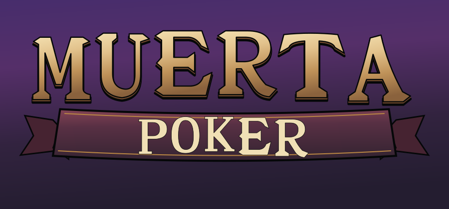
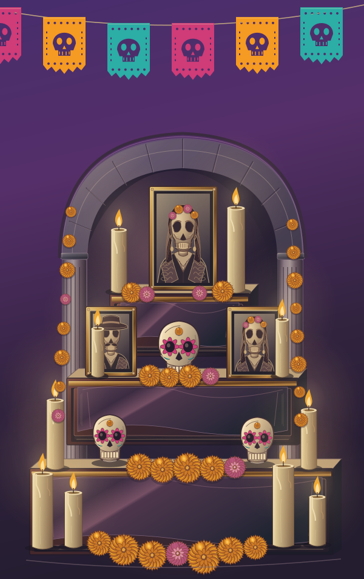
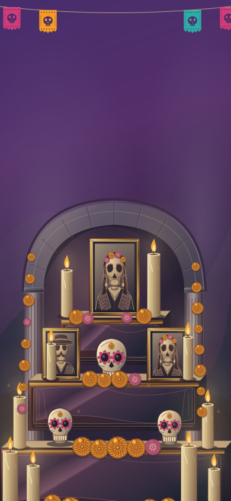
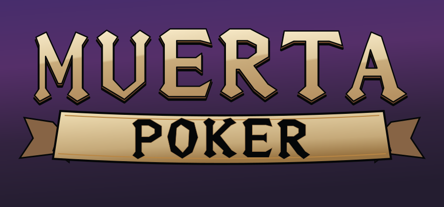

A · Классические тату-засечки

Светлая золотая лицевая грань, тёмный чернильный контур, винная лента.
Вертикальная ниша связывает верх сцены с тремя ярусами. В центре — портрет памяти; по ступеням распределены неподвижные свечи, рамки с портретами, сахарные черепа и маригольды. Фиолетовые сумерки остаются выбранным фоном A.

Ниша и верхний портрет занимают среднюю часть, два семейных портрета и керамический череп — второй план, нижние свечи и цветы — передний. Свет и материал построены в векторе; движения пламени нет.
Выбранные плоские флажки покачиваются одним слоем, рядом — немного лёгких лепестков. Музыканты, гитары и дефектный бумажный слой удалены из этой композиции.
Чистый фон 3:4 (1200×1600) · 9:16 (1080×1920)
На телефоне доска закрывает центральную часть фона; свободные зоны сохраняют цвет, свет и цветы. Полная портретная композиция доступна ниже.

Все шпоры встроены в контуры букв. Контраст толстых и тонких штрихов задан рисунком; отдельно стоящих «ударений», белых царапин и свободных дрожащих росчерков нет. Лента образует основание надписи POKER.

Светлая золотая лицевая грань, тёмный чернильный контур, винная лента.

Угловые плечи, костяная лицевая грань, лента с тёмной надписью POKER.
Снимок финального кадра этапа 1b.